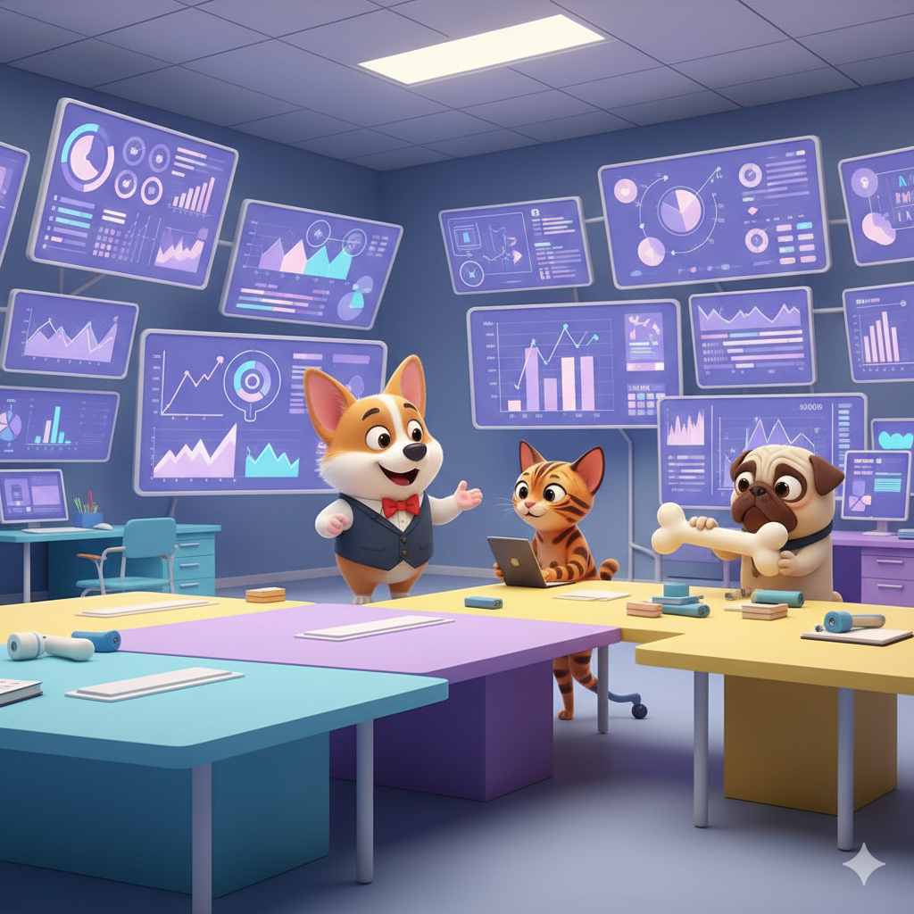
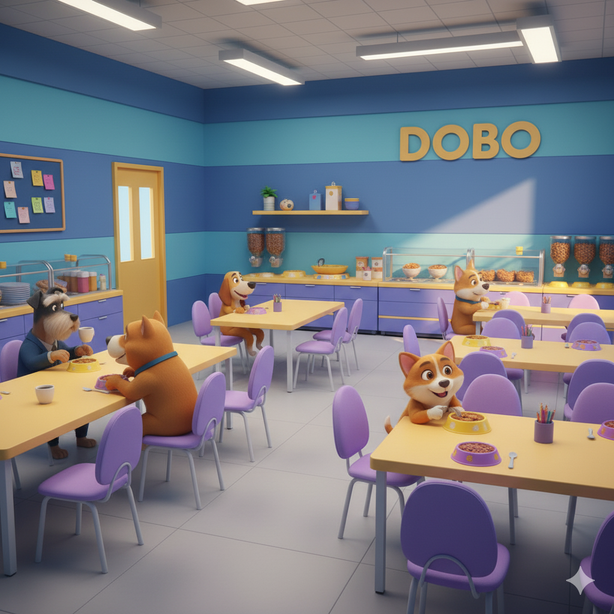
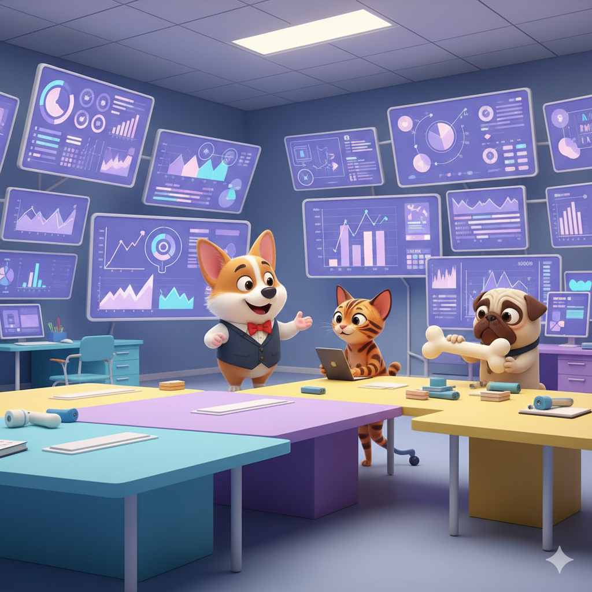
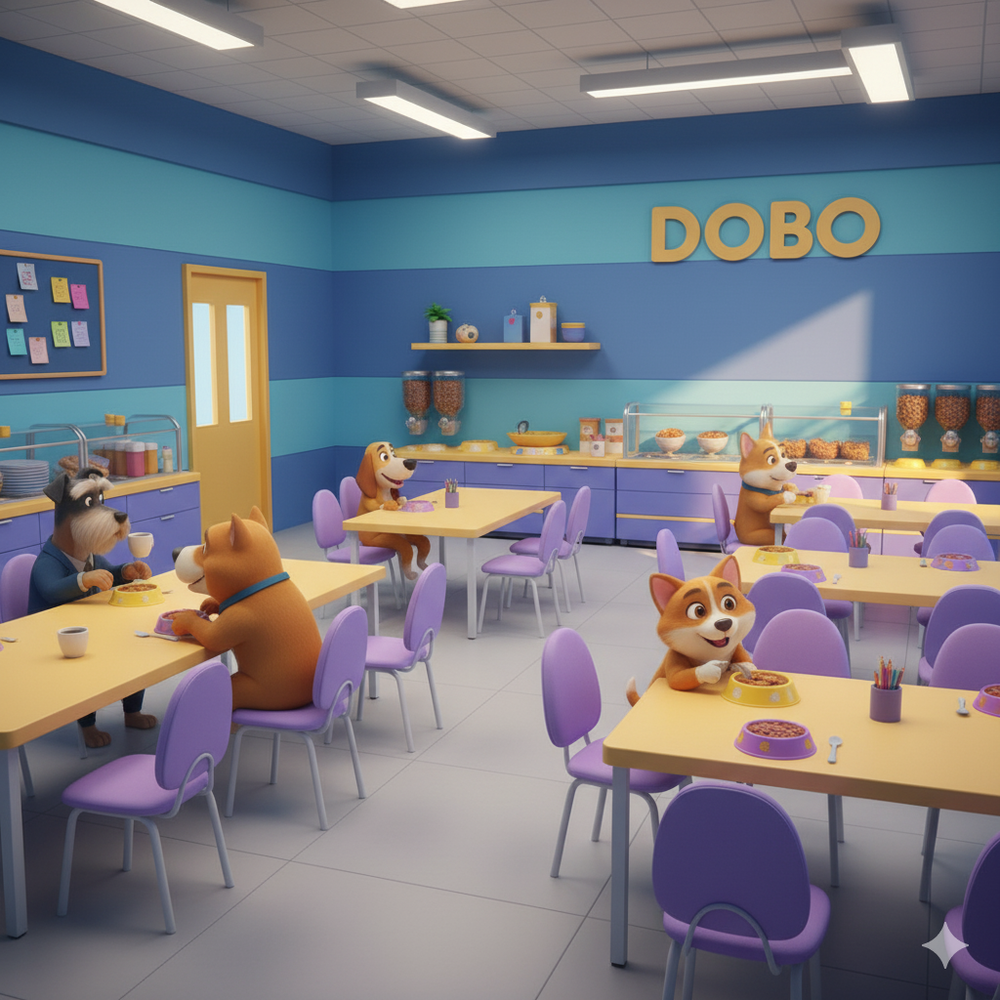

Bem-vindo à Dobo Serviços de TI
Aqui quem cuida dos seus sistemas são pets especialistas! 🐾 A Dobo oferece soluções em TI com a inteligência de um Schnauzer e o carisma de um Pitbull caramelo.
Nossa História
A Dobo nasceu quando dois amigos de quatro patas — Doce de Leite e Bono — decidiram transformar o mundo da tecnologia. Hoje somos uma equipe de pets e humanos dedicados a oferecer serviços de TI cheios de alegria, segurança e eficiência! Acreditamos que tecnologia não precisa ser fria e complicada — ela pode ser acolhedora, leve e feita com carinho.
Cada projeto é tratado com atenção e aquele toque especial de empatia que só quem ama o que faz consegue oferecer. Nossos serviços vão desde o suporte técnico e segurança de redes até soluções personalizadas para empresas que buscam inovação sem perder o bom humor — porque aqui, tecnologia e afeto caminham juntos. 🐾💻
Nossa Matilha em Ação
 



Serviços de TI
Segurança de Rede
Protegemos seus sistemas contra ameaças com o faro afiado da Doce de Leite.
Backup na Nuvem
Guardamos seus dados com cuidado, como um osso precioso enterrado no quintal digital.
Suporte Técnico
Atendimento rápido e amigo, sem latidos desnecessários — só boas soluções.
Data Analytics
Transformamos dados em insights valiosos — farejando oportunidades para o seu negócio crescer.
Desenvolvimento Web
Criamos sites e sistemas com design moderno, código limpo e a elegância de um Schnauzer bem penteado.
Monitoramento de Sistemas
Vigiamos seus servidores 24h por dia — sempre alertas, como bons guardiões digitais.
Nossos Fundadores
Doce de Leite
CEO
| Ano | Experiência |
|---|---|
| 2019 | Iniciou carreira como guardiã de rede, farejando vulnerabilidades com precisão. |
| 2021 | Liderou a implementação do sistema de segurança “DogDefender 2.0”. |
| 2024 | Fundou a Dobo Serviços de TI com foco em proteção digital e empatia tecnológica. |
Bono
CTO
| Ano | Experiência |
|---|---|
| 2018 | Desenvolveu soluções em nuvem focadas em automação e desempenho. |
| 2020 | Implementou o framework “CloudBone”, otimizando servidores da Dobo. |
| 2024 | Co-fundou a Dobo, trazendo a visão técnica e o espírito Schnauzer de eficiência. |